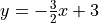

Chapter 4: Equations of Linear Functions
Contents
Chapter 4: Equations of Linear Functions#
Chapter Summery
Lesson 4-1: Graphing Equations in Slope-Intercept Form#
Terms
Slope-Intercept Formula:
m is the slope.
b is the y-intercept.
Graph from a Slope-Intercept Formula formula
Put a point at the y-intercept
so starting at the y-intercept, go how much the numerator is up and the how much the denominator is to the right. Plot a point there.
Connect the two lines.
If the formula is not in slope-intercept form
All you have to do is to change it to slope-intercept form.
is the same as 
Tip
You can also just graph the original formula as it is already in standard form.
If x is not present or could be removed
An equation for a horizontal line might look like this: or like this or even like this .
Lesson 4-2: Writing Equations in Slope-Intercept Form#
Write an Equation Given the Slope and a Point
\begin{aligned} \text{maximize} \sum_{j=1}^{n}p_j x_j \\ \text{subject to} \sum_{j=1}^{n}w_j x_j \leq c, \\ x_j \in \{0,1\}, j = 1, \ldots, n. \end{aligned}